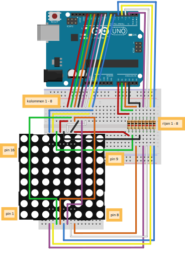
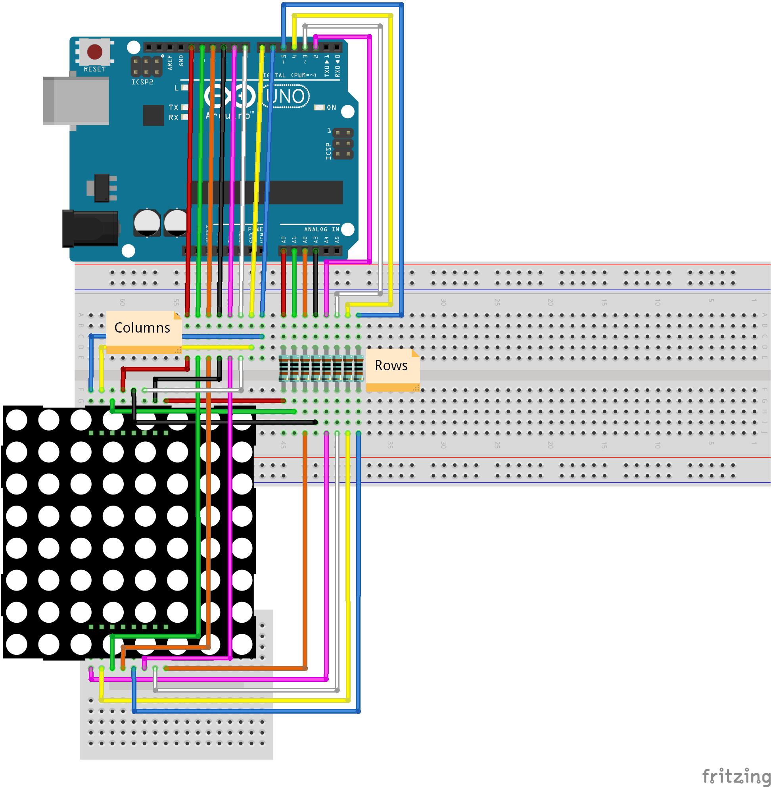

Led Matrix Voorkennis
LED, if, for, functions (basis), joystick Leerdoelen
LED matrix, HIGH, LOW, abs, %
Benodigdheden
Introductie In deze opdracht ga je werken met een led matrix. Dit is een scherm waarin 64 led-lampjes zitten en waarmee je allerlei leuke patronen kan maken. In deze opdracht gaan we een led-lampje besturen met een joystick.
Uitleg werking LED matrix In een LED-matrix zijn de LEDs opgesteld in rijen en kolommen. Alle Anode pins van de leds zijn verbonden met de anode pins van de andere leds in dezelfde rij. Ale kathode pins van de leds zijn verbonden met de kathode pins van de andere leds in dezelfde kolom. De aansluitpennetjes op de LED-matrix zijn verbonden met de rijen en kolommen. Hiernaast kan je zien hoe een LED-matrix er vanbinnen uitziet. Ook kan je zien welke pins worden gebruikt om de rijen en de kolommen te besturen. Bijvoorbeeld de pin C8 links boven is voor kolom 1. De pin R5 links onder is voor rij 5. Uitleg LED matrix Je kan een LED aanzetten door een kolom HIGH te maken en een rij LOW te maken. Er gaat dan stroom lopen van HIGH naar LOW. De LED op het kruispunt van de rij en de kolom gaat dan aan. Op deze manier kunnen de 64 LEDs met slechts 16 aansluitingen worden bestuurd.  Bouwen van de elektronica Maak het volgende schema na. Vraag aan een mentor om te helpen met het uitzoeken van alle spullen die je nodig hebt.  Bouwen van de elektronica Maak het volgende schema na. Vraag aan een mentor om te helpen met het uitzoeken van alle spullen die je nodig hebt. Aanroepen van updateDisplay() functie Uitleg modulo functie Stel dat je 13 snoepjes wil verdelen over 4 vrienden. Iedereen krijgt dan 3 snoepjes, en er blijft er dan 1 over. Dus . Wat er overblijft is de restwaarde. Deze restwaarde kan je uitrekenen met de modulo functie. Bij arduino schrijf je de modulo functie als een -teken. Voorbeeld: Uitdaging Probeer eens om ....... Uitdaging Probeer eens om ....... separator1 |